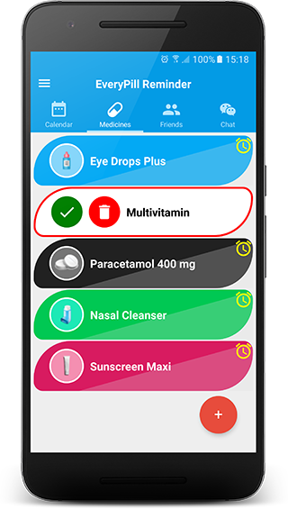

Medicines
Add a new medicine

This option allows you to add the medicines that you need to manage for yourself and others. To relate the individual (yourself or others) to the medicine, you just need to type his/her name when adding the new med.
You can do it with a few simple steps. Let's see how it works?
1. From the Medicine's tab, tap Add (+)
2. On the next screen, you can select a background colour. There are five different colours to help you to better organize your list. Try them out!!
3. Select the type of medicine from the list. Required
You can choose one of these options: Capsule, Cream, Drops, Gel/ Lotion, Inhaler, Injection, Powder, Mouthwash, Spray, Syrup, Tablet, Suppository, Other.
After selecting the med type, note that its image is changed.
4. Add a name to the medicine. Required
This is for your own information, so you can type a name that is relevant to you.
5. Add dosage and type. Optional
The type options are: cc, drops, g, mg, mL, pills, spray, tabs, tablespoon, teaspoon, units, other.
6. Select the frequency to take it. Required
There are four options:
- Every day
- Week days
- Days interval
- Weeks interval
After that, select the correspondent interval and time to start to take it.
7. Add the patient name. Required
Here is where you relate the medicine to the patient. This is for your own information, so you can type a name that is relevant to you.
8. Add a note. Optional
9. After fill in all required fields, tap Save to add the new medicine.
Result
- The medicine is added to the Medicines list with its alarm set.
- Message 'Medicine saved' is displayed.
- The medicine is added to the Calendar list.
All medicines with the alarm set will be listed on the Calendar tab. If the initial date is different from the current day, you must scroll down the list until the initial date to see the meds on the list.
If you don't fill in all the required fields, and tap Save, the missing fields are surrounded by a red square.
List of medicines
The medicine's tab lists all added medication.
The list displays the med's icon, name, and the alarm, that can be ON or OFF.
When you add a new med, the alarm is set by default. To turn it off, just tap the alarm icon.
Edit a medicine
Tap a medicine to edit its information.
On the edition screen, update the required fields and tap the drop-down menu.
From the drop-down menu, select Save medicine.
| ||
Result
- The updated med is on the list of medicines
- Different from when you add a new med, the alarm isn't set by default. It remains like it was before the edition, ON or OFF.
- Message 'Medicine saved' is displayed
Delete a medicine
1. To delete a med, tap it from the list of medicines.
2. On the edition screen, tap the drop-down menu.
3. From the drop-down menu, select Remove medicine.
4. Message 'Do you want to remove
5. Tap OK to confirm.
Result
- You're redirected to medicine's list
- The removed medicine is not on the list anymore
- Message 'Medicine deleted' is displayed
Share a medicine
- Only users with Premium version can share medicines.
- To share a medicine with others, you first need to have friends added to your Friend's list. Refer to section Friends to learn more about it.
1. Tap a medicine to share its information.
2. On the edition screen, tap the drop-down menu.
3. From the drop-down menu, select Share medicine.
- A popup is displayed.
4. On the popup, tap 'Tap to select a friend'.
- The list of friends is displayed.
5. Select one friend from the list.
- The name of the friend is displayed.
6. Tap Share.
Result
- You are redirected to the list of meds.
- Message 'Medicine shared' is displayed.
You can only share one medicine at a time with the same friend. If you try to share a second medicine with someone, and he/she didn't respond (Accept or Reject) your previous request yet, the message: 'Your friend must first respond to the previous request' is displayed.
Respond to a request
When someone shares a medicine with you, you will see the suggested med on the list. The shared med is surrounded by a red line, and it contains the buttons Accept and Reject.
The alarm for a shared med won't sound until you accept the request.
To accept a request, tap Accept.
Message 'Do you want to add (medicine's name) sent by (friend's name)?' is displayed.
Tap [OK] to accept it.
Result
- The medicine remains on the list, and its alarm is set
- Buttons Accept and Reject are removed
- Message 'Medicine added' is displayed
To reject a request, tap Reject
Message 'Do you want to remove (medicine's name) sent by (friend's name)?' is displayed.
Tap [OK] to reject it.
Result
- The medicine is removed from the list
- Message 'Medicine deleted is displayed
Remember
While you don't respond to your friend's request, either accepting or rejecting it, he/she won't be able to share another medicine with you.